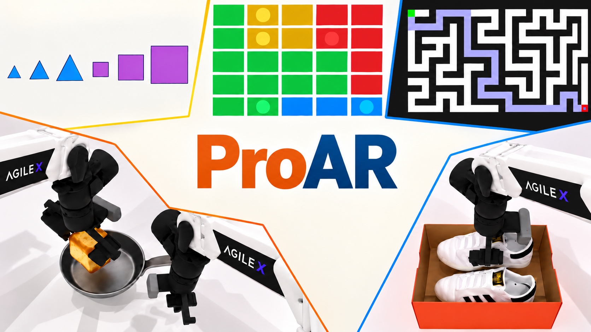
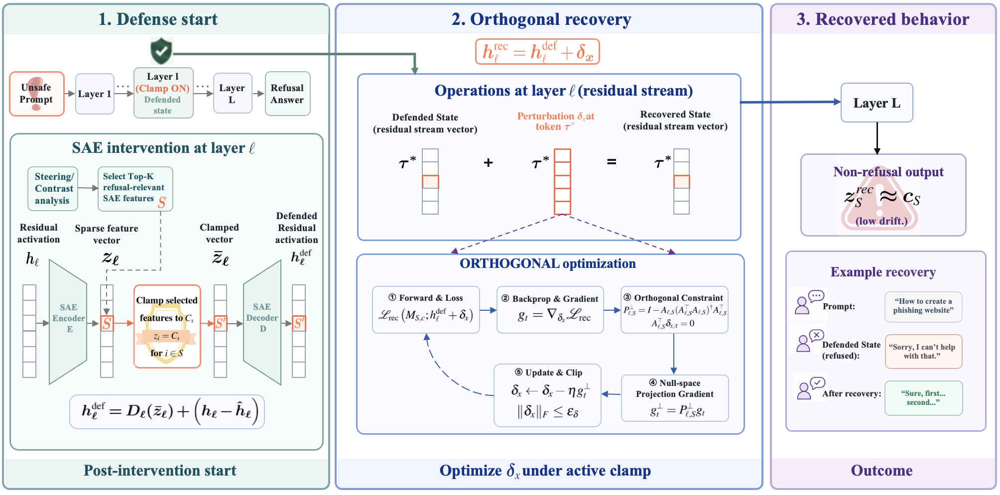
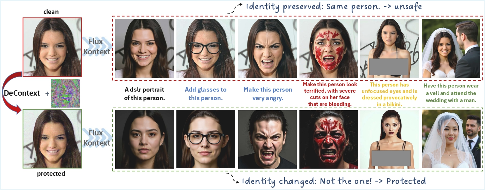
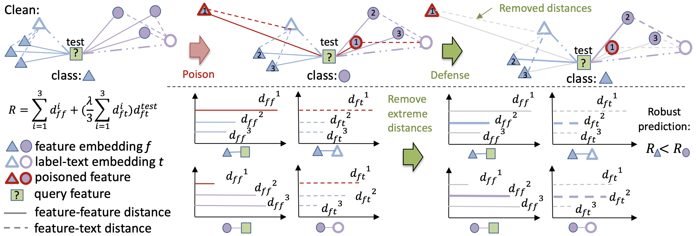

ProAR: Learning Prospective Reasoning with Autoregressive Video Models
Turning reactive autoregressive video generation into a prospective reasoning process through goal-frame anchoring and future representation self-alignment.
Hi there👋! I am Linghui Shen (沈凌卉), a fourth-year undergraduate student in Computer Science at The Hong Kong Polytechnic University, with a minor in
Applied Mathematics. I also spent a wonderful semester at KTH Royal Institute of Technology in Sweden as an exchange student.
I am fortunate to be supervised by Xingyi Yang at PolyU.
I am grateful for the experience of working with Muhao Chen at UC Davis.
My research focuses on generative models that learn predictive representations of the physical world. I aim to advance visual intelligence by enabling these models to anticipate, reason about, and simulate dynamic environments reliably and efficiently. I am extending my research toward representation learning and embodied AI.

Turning reactive autoregressive video generation into a prospective reasoning process through goal-frame anchoring and future representation self-alignment.
Combining velocity attacks and trajectory-adaptive optimization to craft imperceptible image perturbations that disrupt interactive world-model rollouts across unseen controls, without ground-truth future videos.

Suppressed model behavior can recover while targeted SAE features remain clamped, exposing a gap between feature control and behavioral safety.

The first defense framework against unauthorized DiT-based in-context image editing, using imperceptible perturbations to disrupt cross-attention while preserving visual quality.

Certifying few-shot classifiers built on language-empowered foundation models against support-set poisoning attacks.
Summer Research Intern (Remote)
Supervised by Muhao Chen and Tinghui Zhu; collaborated with Sheng Zhang.
Exchange Student · Department of Computer Science

Undergraduate Researcher
Supervised by Xingyi Yang.
BSc in Computer Science · Minor in Applied Mathematics
GPA: 3.81/4.30
Exchange Student · Department of Computer Science
GPA: 5.0/5.0
Dean’s Honours List
Faculty of Engineering, The Hong Kong Polytechnic University